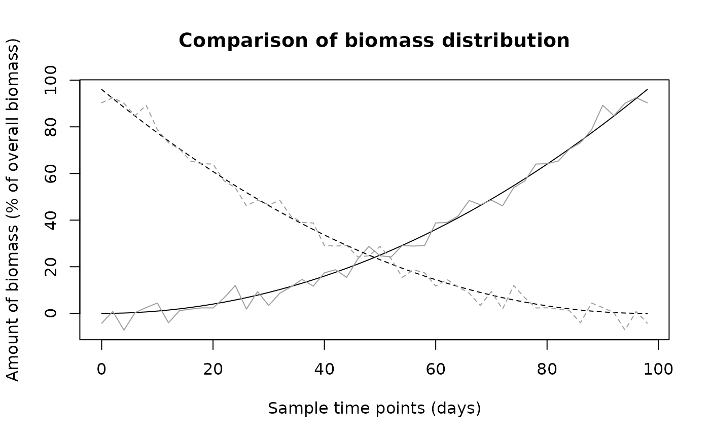

biomass.compare.RdThis function compares - graphically and analytically - two estimations of biomass movement over the same domain, which will usually be the results of two different algorithms.
biomass.compare(N1, N2, graphics = TRUE, legend = NULL)An object of class biomass\_distribution.
An object of class biomass\_distribution.
If TRUE, the times series' for the different polygons are plotted.
If one of the legend-location keywords (see ?legend) or a location (see ?locator) is given, a legend is drawn at the requested location. If NULL, no legend is drawn.
Two distance measures of the two time series, namely the average
squared difference between two corresponding entries in the matrices
N1 and N2 and the average relative deviation,
sum((N1-N2)^2)/n
and
sum(abs(N1-N2)/(N1+N2)/n
The objects N1 and N2 both contain information about the time
points at which they were calculated, to ensure both are comparable. In the
rest of this document, N1 and N2 refer to the time series
only, which are really N1$bmdist and N2$bmdist.
It is assumed that N1 and N2 describe biomass distributions
over the same time intervals and over the same domain, as there is no way
for the function to check this. N1 and N2 have to be matrices
of dimension 'number of polygons' x 'number of time steps'.
## Generate two sample time series with two polygons
N1 = (seq(0,98,length=50)/10)^2
N1 = matrix(c(N1,N1[50:1]), nrow=2, byrow=TRUE)
N2 = N1[1,] + rnorm(50,sd=3)
N2 = matrix(c(N2,N2[50:1]), nrow=2, byrow=TRUE)
## Turn into objects of class "biomass_distribution"
N1 = list(bmdist=N1,times=seq(0,98,length=50))
N2 = list(bmdist=N2,times=seq(0,98,length=50))
class(N1) = "biomass_distribution"
class(N2) = "biomass_distribution"
## Compare them
biomass.compare(N1,N2)

#> [1] 20.46445515 0.06146867